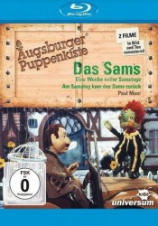

#4701 Eine Woche voller Samstage
 
 IMDB-Wertung: 7.5 / 10
IMDB-Wertung: 7.5 / 10  Metascore: 0
Metascore: 0 
Am Sonntag Sonne, am Montag Herr Mon, am Dienstag Dienst, am Mittwoch Wochenmitte, am Donnerstag Donner, am Freitag Frei und am Samstag Sams! Doch mit dem hat Herr Taschenbier nur Scherereien. Besonders mit seiner Zimmerwirtin, Frau Rotkohl. Denn das Sams ist nicht nur frech, sondern isst auch noch alles, was ihm unter die Finger kommt. Ausserdem kann es Wünsche erfüllen und das kann sehr praktisch sein - wenn man es richtig macht.
Jahr: 1977
Dauer: 49 Minuten
FSK:
Land: West-Deutschland Studio: S.A.D. Home EntertainmentTonspuren:
Untertitel:
Auflösung: 1080p (1440x1080) Größe: 3358 MB
Genre: Familie
Regisseur: Manfred Jenning
Drehbuch: ITC Films
Soundtrack:
Darsteller:
- Claudia Hansmann als Frau Rotkohl , uncredited
- Ernst H. Hilbich als Sams , uncredited
- Manfred Jenning als Herr Oberstein , uncredited
- Sepp Strubel als Herr Taschenbier , uncredited
Datei: X:\Kinder Collections\Augsburger Puppenkiste\Woche voller Samstage, Eine (1977, FSK, 1440x1080).mkv seit 08.11.2016
Festplatte: Kinder-Filme+Trick
 Alle Filme aus Gruppe 'Kinder Collections\Augsburger Puppenkiste'
Alle Filme aus Gruppe 'Kinder Collections\Augsburger Puppenkiste'